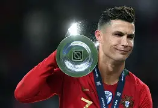
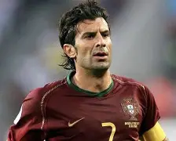
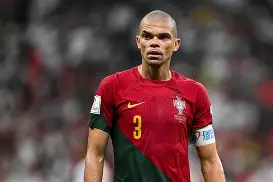
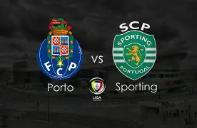
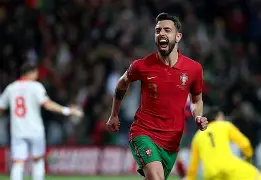
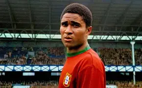

| gastronomy | culture | sports | history | index | |
Sport of Portugal |
|||||
Portugal's flagship sport |
|||||
Football in Portugal is more than just a sport; it is a central part of national identity and everyday life. From a young age, many children play football in schools, streets, and local clubs, dreaming of becoming professional players. The Primeira Liga is the country’s top division and is known for its competitiveness, passionate fans, and strong focus on developing young talent. Clubs like Benfica, FC Porto, and Sporting CP not only dominate Portuguese football but are also respected across Europe for their history and success in international competitions. Portuguese football is especially admired for its ability to produce technically skilled and intelligent players who often move on to top European leagues. Legends such as Eusébio, Luís Figo, and Rui Costa helped build Portugal’s football reputation, while modern stars like Cristiano Ronaldo, Bernardo Silva, and Bruno Fernandes continue that legacy. The national team’s victories at Euro 2016 and the 2019 Nations League united the country and confirmed Portugal as a major force in world football. Passionate stadium atmospheres, intense rivalries, and pride in the national team make football an essential and emotional part of life in Portugal. |
|||||
|  |  |  |  |  |  |
Football in Portugal has a long and rich history that began in the late 19th century, when the first recorded match was played in Cascais in 1888 thanks to British influence and young Portuguese enthusiasts, laying the foundation for organized competition. The Federação Portuguesa de Futebol was officially established in 1914 and later became one of the founding members of UEFA in 1954, helping integrate Portuguese football into European structures. Over time, the sport evolved not only at the top level but also through deeply rooted local clubs like Lusitano de Évora, which played 14 seasons in the old First Division and promoted not just football but also cultural and educational activities in their region. Rivalries such as the Derby da Capital between Benfica and Sporting reflect social and cultural competition within Lisbon, while O Clássico between Benfica and FC Porto carries broader regional significance between the country’s two biggest cities. Internationally, Portuguese clubs and the national team have carved out an impressive legacy: Portugal hosted and competed in major tournaments with notable successes in the UEFA European Championship and UEFA Nations League, and clubs like FC Porto and Benfica lifted top European trophies decades ago, cementing Portugal’s place on the continental stage. Beyond trophies, Portugal is known for exporting football talent — nearly half of professional transfers by Portuguese players have historically been to clubs abroad, underlining the country’s role as a key talent source for Europe’s top leagues. This blend of deep tradition, competitive structures, historic rivalries, and global influence makes football in Portugal a tapestry of sporting passion and cultural pride that resonates far beyond its borders. |
|||||